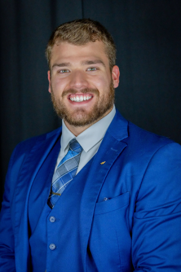

Jacob's Resume

Jacob Clinton
Education
- Bachelors Degree in electrical engineering at Mississippi State University
- Associates Degree in art from Itawamba Community College
Skills
- Ability to see new angles.
- Calm in high-stress situations.
- Can communicate effectively with people.
- Can communicate ideas effectively.
- Determined to get the job done no matter what.
Job Experience
- Reliability Engineering Intern, International Paper, Vicksburg MS
- Collaborated with various teams to address mechanical and electrical issues within the mill.
- Executed successful work to promote reliable operation for the mill.
- Resident Advisor, Mississippi State University, Starkville MS
- Engaged with students and staff to create a sense of community.
- Successfully executed events for students to ease the stress of school.
- HM Richards Manufacturing Position, Baldwyn MS
- Moved product from the main line to the shipping area.
- Achieved collaboration among co-workers to create a much more tolerable work environment.
- Resident Advisor, Mississippi State University, Starkville MS
- Collaborated with staff to create programs.
- Foster an informative and inclusive community within the residence hall.
- HM Richards Office Assistant for HR, Rooms to Go, Baldwyn, MS
- Organized office space as well as personnel files for employees.
- Collaborated with different departments to ensure an appropriate work environment